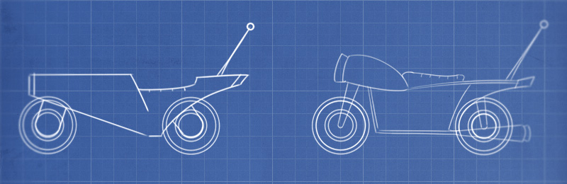
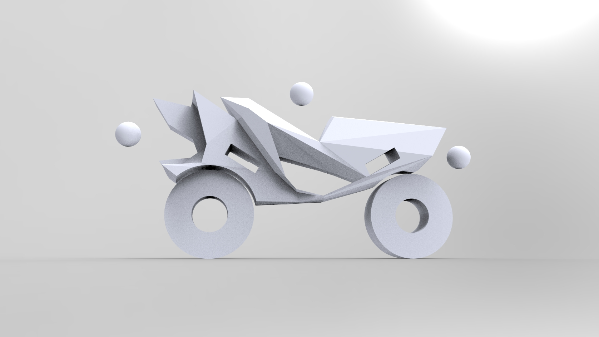
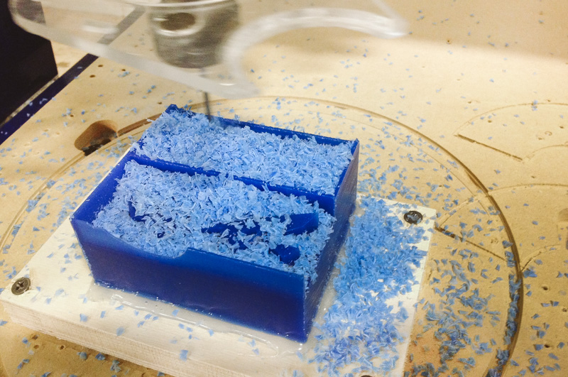
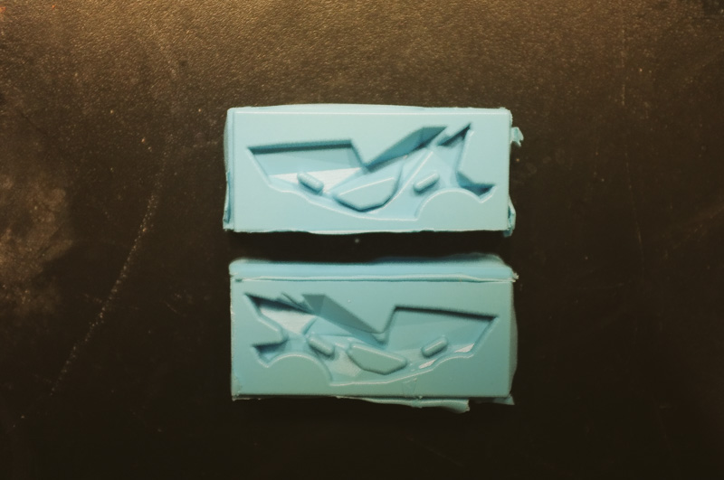
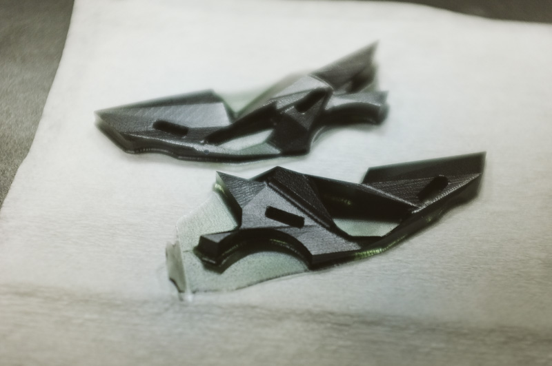
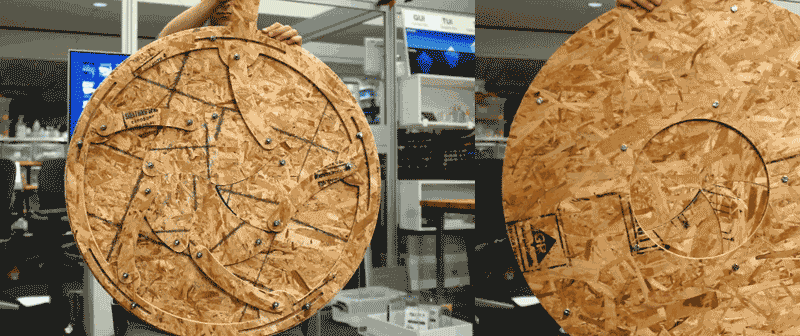

Molding and Casting a Little Moto Toy
After nailing out a few ideas, I dove into Solidworks to do a rough draft so I could start thinking in 3-dimensions faster.
I ran my part as a quick draft on the Makerbot before dropping it in the nicer Dimension printer and I realized my tolerences for the friction fitting parts were waaay too tight, so I snuck in a quick change before the final was printed.
After playing around with the 3d prints, I decided to try something that would be easier to produce in larger scales and be more aesthetically pleasing: casting my own plastic.
So I redesigned the toy to remove any undercuts post slicing in half, milled the positive out of wax, and created the final molds.
- 

- 

- 
CNC'ing: Large-scale Lens Aperture Diaphragm
After kicking around a lot of design ideas and playing with the OSB material, I slowly realized that without any substantial flex in the material, it would be hard to do some of the more clever, space-saving iris designs which have the individual petals overlapping each other.


After a good amount of sanding on the edges to get rid of the intense flakes, filing down the holes to be fully cut through, and dropping in all the hardware, everything came together and it was super sweet seeing the full mechanism in action.
Working with Leather & Electronics
Madeline: Physical Prototype
Rough prototype of the leather, led-infused cover
Through physical prototyping I was able to create an interactive model of a new type of digital photo album. Its mix of classic and modern aesthetics uses a leatherbound cover integrated with an array of leds. Download the Eagle file of the circuit board I designed or view the arduino code for the pulsing wave array effect on Github.